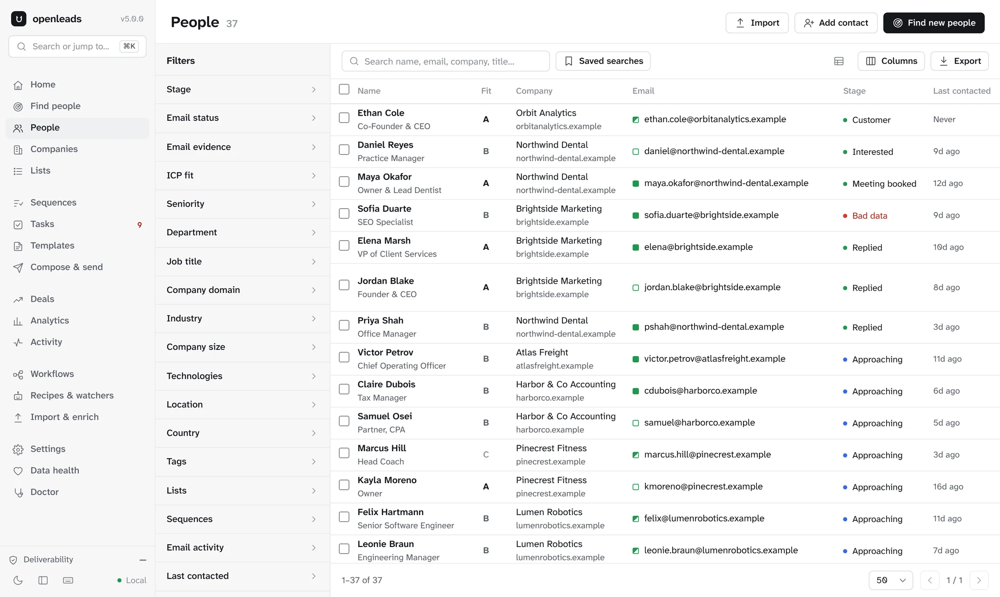

Describe a customer.
Get the people.
OpenLeads searches free public sources for the businesses and people you describe, finds their email addresses and tells you how it knows each one. It runs on your machine, with no API keys and nothing to pay.
Or run npx openleads. Quickstart
| Maya Okafor Owner and lead dentist | Northwind Dental | maya@northwind-dental.example | found | |
| Daniel Reyes Practice manager | Northwind Dental | daniel.reyes@northwind-dental.example | pattern | |
| Priya Shah Orthodontist | Lakeline Orthodontics | priya@lakeline-ortho.example | found | |
| Tom Brennan Office manager | Barton Creek Family Dentistry | tom@bartoncreekdental.example | guessed | |
| Front desk Contact address | South Congress Smiles | hello@socosmiles.example | found | |
| Elena Marsh Lead hygienist | Mueller Dental Studio | emarsh@muellerdental.example | pattern |
Every address says how we know it.
Most finders give you one confidence score. OpenLeads tells you where each address came from, so you can decide what is worth sending.
Published on the company's site, in a public commit or a security.txt file, or confirmed by the mail server.
Built from an address format already seen at that company, like first.last or first initial plus last name.
The most common format for that name. Nothing confirms it, and the label says so.
The color answers a second question: will it deliver? Seven checks decide, and most of them work without port 25, which home internet providers block.
- Mail servers Two DNS-over-HTTPS resolvers must agree
- SPF, DMARC and provider From the domain's TXT records
- Disposable, role and free mail Checked against lists on your machine
- Gravatar A public profile means a real inbox
- Published addresses Harvested from sites, commits and security.txt
- Learned patterns Each run teaches the next one
- SMTP and catch-all Probed twice when port 25 is open
We publish how often we guess.
Every night a GitHub Action runs the same real searches against the live sources, asks for ten leads each, and commits what came back. No cache, no cherry-picking, and the empty nights stay in.
| Search | Returned | Leads | Found | Pattern | Guessed | Time |
|---|---|---|---|---|---|---|
| dentists in Austin | 0 | 0 | 0 | 0 | 15 s | |
| marketing agencies in Miami | 10 | 4 | 2 | 4 | 48 s | |
| law firms in London | 4 | 1 | 0 | 3 | 117 s | |
| accountants in Toronto | 4 | 1 | 0 | 3 | 77 s | |
| software companies in Berlin | 10 | 6 | 0 | 4 | 103 s | |
| gyms in Sydney | 4 | 4 | 0 | 0 | 90 s | |
| fintech founders | 10 | 2 | 0 | 8 | 18 s | |
| AI startup founders | 10 | 5 | 0 | 5 | 17 s | |
| rust developers in Berlin | 10 | 8 | 0 | 2 | 103 s | |
| machine learning researchers | 10 | 3 | 0 | 7 | 51 s | |
| emails at stripe.com | 4 | 2 | 2 | 0 | 5 s | |
| real estate agents in Chicago | 10 | 9 | 0 | 1 | 52 s |
Run of 28 Oct 2026 on version 5.0.0: 11 of 12 searches returned leads, 72% of the requested leads came back, and 57% of the emails were found or built from a seen pattern. Every night's results
A sales workspace on localhost.
Run openleads web and everything you find lands in one place: people and companies with Apollo-style filters, lists, sequences, tasks, deals and analytics. It is a single SQLite file in ~/.openleads, and it never leaves your machine.
Want to look first? openleads demo opens it on an invented workspace.

The People page, on the demo workspace.
- Find
- Plain-English search across ten free sources. Company lookups with tech stack, socials and phone numbers. Enrich any CSV.
- Verify
- Found, pattern or guessed on every address, seven deliverability checks, and automatic suppression of bounces and unsubscribes.
- Reach out
- Drafts you edit before they send. Sequences with email, call, LinkedIn and task steps. Warmup caps and one-click unsubscribe.
- Track
- Stages that move on their own, ICP fit from A to D, a task queue, a deal pipeline with a weighted forecast, and analytics.
- Automate
- Recipes and watchers on a schedule, drawn as workflows. Exports to Sheets, Notion, Airtable, HubSpot and webhooks.
- Bring your data
- Import Apollo, HubSpot and LinkedIn exports with the columns mapped for you, and export back in their formats.
Use it from the terminal, the browser, Python or Claude.
Terminal
Results print as a table, or as CSV and JSON you can pipe.
# ten leads, every email labeled
openleads find "accountants in Toronto"
openleads find "fintech founders" -f csv > leads.csvBrowser
The workspace on 127.0.0.1, bound to your machine only.
openleads web
# or try it on invented data
openleads demoPython
One call returns leads you can loop over or save.
import openleads
leads = openleads.find("gyms in Sydney", count=20)
leads.write("gyms.csv")Claude and Cursor
An MCP server that finds leads and works your lists, tasks and sequences.
claude mcp add openleads -- openleads mcp # then ask: # find 20 dentists in Austin and add them to a list
Compared with the free tiers.
| Feature | OpenLeads | Apollo and Hunter, free |
|---|---|---|
| Cost | $0, no credit limits | Credits, then paid plans |
| API key | None | Required |
| Email labels | Found, pattern or guessed on every address | One confidence score |
| Your own list | Paste a CSV, get every email labeled | Paid feature |
| Sequences, tasks, deals | Included, unlimited | Limited, then paid |
| Where your data lives | Your machine | Their cloud |
| Source code | Open, AGPL-3.0 | Closed |
Questions people ask.
Is it really free?
Yes. It only uses free public sources and your own mailbox, so there is nothing to meter. The code is AGPL-3.0; if you want to build it into a closed-source product, there is a commercial license.
Where do the leads come from?
OpenStreetMap for local businesses, Y Combinator and Hacker News for startups, Wikidata and SEC EDGAR for companies, GitHub, Hugging Face and OpenAlex for builders and researchers, the NPI registry for US clinicians, and company websites for the people behind them. You never pick one: your search goes to the sources that fit.
Will it get my domain flagged?
Only deliverable addresses are sent by default. Sends are throttled and capped while your mailbox warms up, every email carries one-click unsubscribe, and openleads doctor grades SPF, DKIM and DMARC before your first send. A secondary sending domain is still a good idea.
Is cold email legal?
It depends on where you and your recipients are. OpenLeads keeps suppression lists and unsubscribe headers for you, and the responsible use guide covers CAN-SPAM, GDPR and CASL.
Do I need to know Python?
No. Install it with one command and type what you want, in the terminal, in the dashboard or through Claude. Python only matters if you want to add your own source.
Install it and describe your first customer.
Python 3.8 or newer. Read the docs